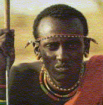

por Doris Payne

El masái es una lengua hablada por unas 883,000 personas en África Oriental, principalmente en Kenia y Tanzania. Los masáis son un pueblo muy orgulloso que vive del pastoreo de ganado en algunas de las regiones más secas y desoladas de la tierra. Han conservado gran parte de su cultura y su estilo de vida tradicionales a pesar de más de cien años de contacto con la civilización europea y de muchos choques violentos con los europeos y con los grupos lingüísticos vecinos. Sus únicas armas son mazos de madera, lanzas y la capacidad de sobrevivir y de moverse con rapidez por las llanuras africanas.
Como en muchas lenguas de África Oriental, el «tono» es muy importante en masái. Los distintos tonos se escriben como marcas encima de algunas letras. Por ejemplo, las letras á, í y ó se pronuncian con tono alto. Las letras à, ì y ò se pronuncian con tono bajo. Si una letra no lleva marca, se pronuncia con «tono medio», a la mitad entre el alto y el bajo.
También hay algunas letras del alfabeto masái que no se usan en español. No necesitas saber pronunciar estas palabras para resolver el acertijo; eso sí, fíjate muy bien en las letras y en las marcas de tono.
Las siguientes son algunas oraciones en masái, y sus traducciones en desorden. Indica qué traducción corresponde a cada oración masái escribiendo la letra de la traducción correcta en la casilla: